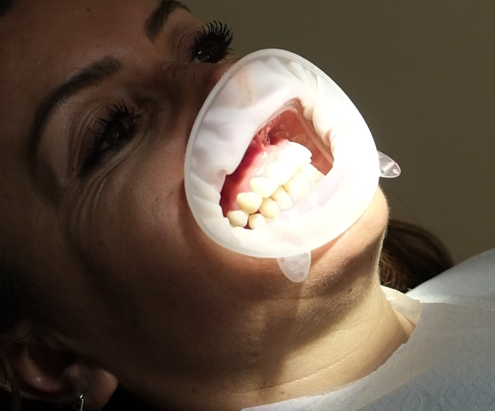
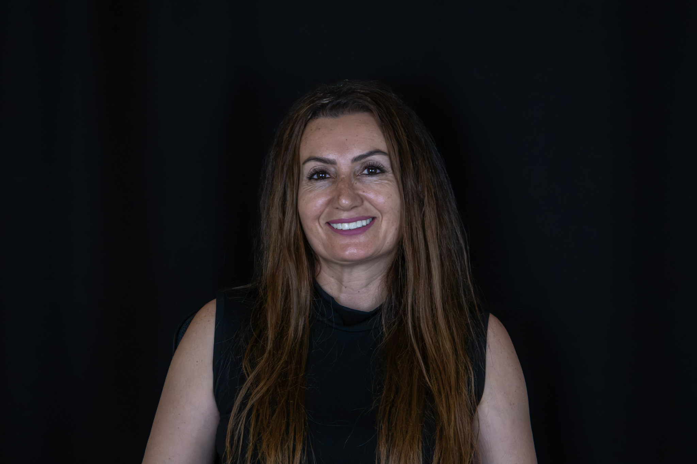

Hayatın koşturmacası içinde etkileyici bir gülüş, güvenin en doğal anahtarıdır.
Bu yazıda, modern diş hekimliğinin en popüler teknolojilerinden biri olan Airflow yöntemiyle daha parlak ve estetik bir gülüşe nasıl kavuşabileceğinizi inceleyeceğiz. Zamanla çay, kahve, sigara ve bazı gıdalar diş minesinin renk kaybetmesine neden olur. Günlük fırçalama rutinleri bu derinlemesine lekeleri çıkarmakta yetersiz kalır. İşte tam bu noktada, gelişmiş bir profesyonel temizlik ve beyazlatma teknolojisi olan Airflow devreye girer.
Airflow Teknolojisi Nedir ve Nasıl Uygulanır?
Airflow, su, basınçlı hava ve özel ince toz parçacıklarının (genellikle sodyum bikarbonat veya eritritol bazlı) birleşiminden oluşan yüksek hızlı bir sprey sistemidir. Bu yöntem, diş minesine hiçbir şekilde fiziksel zarar vermeden; Çay, kahve ve sigara kaynaklı inatçı yüzey lekelerini anında çıkarır, Klasik aletlerin zor ulaştığı diş aralarındaki ve diş eti çizgisindeki plakları derinlemesine temizler, Dişlerin kendi doğal, parlak ve beyaz tonuna hızla geri dönmesini sağlar.

Neden Airflow Tercih Edilmelidir?
Geleneksel temizlik yöntemlerine kıyasla son derece konforlu olan Airflow, ağrısız ve hızlı bir deneyim sunar. Diş minesini çizmeyen özel yapısı sayesinde hem diş sağlığınızı korur hem de seans sonrasında ışıltılı ve pürüzsüz bir hissiyat bırakır.

"Sağlıklı, lekesiz ve ışıltılı bir gülüş, kendinize yapacağınız en iyi yatırımdır."
Siz de inatçı lekelerden kısa sürede kurtulmak ve Airflow teknolojisinin konforuyla tanışmak istiyorsanız, kliniğimizle iletişime geçerek hemen randevu alabilir ve uzman ekibimizden destek alabilirsiniz.